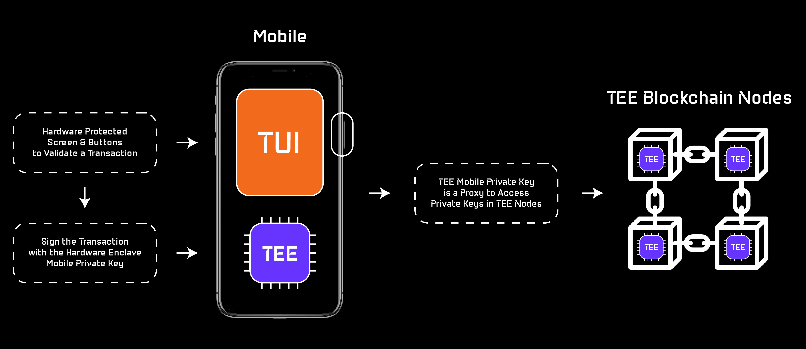
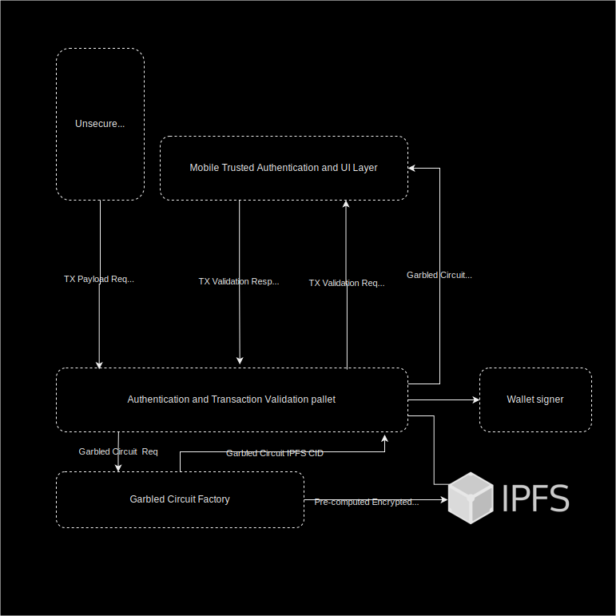
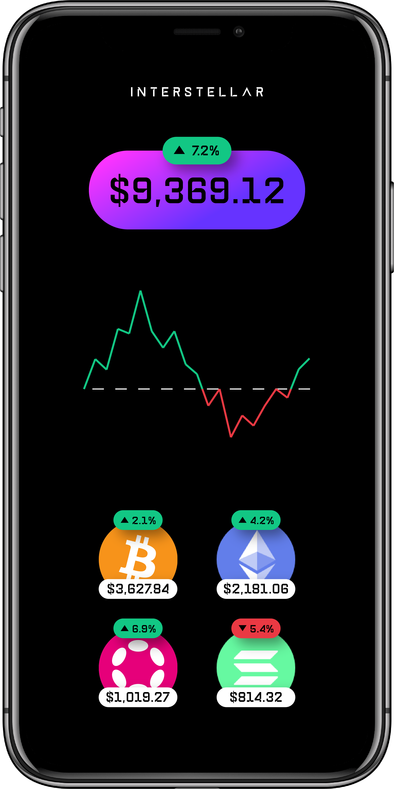

Introduction
"The Web3 ecosystem needs a friendly user experience with hardware level security to reach mass adoption."
The Top 3 Web3 Wallet Problems
The main pain points of non-custodial wallet solutions still are:
-
User experience | Can an easy to set-up Wallet be an efficient customer acquisition tool for Dapps and DeFi players?
-
Security | Are Cryptocurrency Wallets more at risk than ever?
We think that current wallet solutions slow down the DeFi adoption.
Interstellar is a novel non-custodial mobile multichain wallet with hardware level security. Based on a Substrate blockchain and SubstraTEE/IntegriTEE workers connected to a mobile, the wallet solution comes without passphrases or any other secrets to store or remember.
Thanks to Trusted User Interfaces on mobiles and Trusted Execution Environments in both mobiles and blockchain nodes, we can now provide the same hardware security level as hardware wallets with only a mobile and a blockchain - Unlocking an unmatched user experience.

Because TUI is not yet avalaible on all mobile devices, we use a Garbled Circuit/Visual Cryptography scheme which provides an alternative that will be complementary down the road to mitigate potential flaws in TUI.

Features:
-
Multichain wallet - securely store and interact with native cryptocurrency coins, tokens and NFTs from multiple blockchains
-
Easiest set-up in the ecosystem - no private key, passphrase, password, pin or login
-
Hardware level security - TEE on blockchain nodes and mobiles (incl. TUI), Garbled Circuits and Visual Cryptography
-
Simple Recovery Services - leverages the existing Substrate pallet for social recovery + a novel decentralized autonomous recovery service based on NFC
-
Send crypto with social network messages - share a link that includes a pending transaction, even to friends with no wallet: explained in Can an easy to set-up wallet be an efficient customer acquisition tool for DeFi players?
-
Confirm a transaction with ONLY ONE SCREEN - no SMS to wait for, no additional 2FA app to use, no QR code to scan
-
Up to 1,000,000 tps - no tps limit due to slow consensus, thanks to IntegriTEE layer 2 based on hardware enclave technology
Our solution is designed to support blockchain and DeFi mass market adoption with:
-
A decentralized key & asset management service | The user’s private key and signature programs are stored and executed in TEE nodes
-
A decentralized Trusted Transaction Validation Protocol | Leverages TEE and TUI features on mobile, combined with One Time Garbled Circuits and Visual Cryptography to provide a Trusted Authentication and Trusted UI layer on user devices
Intoduction to Garbled Circuit Factory (GCF)
The Garble Circuit Factory is the module in charge of building the Garbled Circuits (GC) used by the Interstellar infrastructure.
Following is a high level overview of the generic pipeline used to generate GC.

Garbled Circuit Overview
Basic Garbled Circuit structure overview
A garbled circuit is a cryptographic obfuscation technique and a cryptographic algorithm that ensures computation privacy i.e. manages the protection of a boolean circuit that can be executed without leaking information. Neither the semantics of boolean operators (AND, OR, XOR, etc.) that make up the circuit nor the semantics of inputs and outputs of the circuit will be revealed to the attackers through reverse-engineering or brute force attacks.

- Inputs and outputs are Garbled Values i.e. 128 bits token indistinguishable from random with a secret semantic value of 0 or 1 only known by the nodes
- Each boolean operator is implemented in the circuit by an encrypted truth table, decrypted by its respective Garbled Values inputs.
Foundation of Garbled Circuits, Viet Tung Hoang, B.S.
Visual Cryptography Display
Garbled Circuit & Visual Cryptography Screen
Garbled Circuits output frames

Those frames superspose on retinal eyes leveraging persistence of vision
Visual Cryptography

Main principles
We use a pre-computed One-Time Garbled Circuit to generate and output Visual Cryptography Shares at 60–120 frames/second on the device framebuffer.
Those visual cryptography shares do not superpose on the device screen but only in the user's eye. Thanks to the human Persistence of Vision ability: your eye and brain retain a visual impression for about 1/30 of a second (the exact time depends on the brightness of the image).
Security consideration
The garbled circuit execution will manage the display of consecutive random frames. The result is that the execution of the circuit will not leak any secret information (passwords, on-time codes or pin pad/keyboard topologies) securely embeded in the circuit.
This ensures that an attacker won't be able to obtain this secret information
- during the garbled circuit execution
- neither with a simple screenshot, thanks to visual cryptography and persistence of vision
As a consequence, it prevent the attacker to build and execute a fake User Interface quickly enough during the display session. This scheme can resist current banking trojans with overlay capabilities but not targeted attacks.
However, it makes a fake UI attack, complexe and resource intensive enough to enable us to detect it during the transaction validation session.
This is the way we aim at resisting potential targeted attacks. Thanks to our proof of history of legitimate computation scheme, (roadmap/research in progress), based on a specific reusable Garbled Circuit evaluation.
Explanation
We started by implementing a working solution that outputs visual cryptography shares. We then realized that it was a bit disturbing for the user and that a pure visual cryptography scheme is not crucial for our overall security model. We then decided to provide a more friendly solution for the user that is also more efficient especially regarding Garbled Circuit size.
Although our circuits display screens at a pixel level to manage any type of images, fonts types, characters sizes and more. We decided to switch on a slightly different solution.
Let's go back to an old fashioned displays to explain it.

The Garbled Circuit can randomly output each:
- segments/sub segments
- any group of pixels
- or even single pixel
of a frame with a probability of 1/n ( n > 2)
Display example

Simulations
To fine tune the design of our circuits and provide realistic look and feel of the solution, we designed the following Transaction validation screen simulations based on PsychoJS library - PsychoPy (github.com) and PsychoPy neuroscience/psychophysic tools
Future plans
At a later stage, we aim at reusing our pixel based visual cryptography implementation and/or segment-based visual cryptography to increase the complexity level of potential attacks and enable video recording proof scheme without disturbing the smooth user experience.
Research Lead
Research lead is to leverage SRAM framebuffer speed 10-30x vs. DRAM to force the attacker to miss frames with a saturated GPU command queue filled with decoy and VC frames on high frequency displays.
Detailed Pipeline for Display Circuits Production
This is the Garbled Circuits generation detailed pipeline for the Transaction Validation screen use case.
It illustrates the way Garbled Circuit Factory can be used with substrate OCWs for the production of the display garbled circuits used by Interstellar.
Pipeline
The file types are mentioned for clarity and to allow matching with calling the executables (e.g. Yosys or ABC) manually, but in practice after [2] all is done in memory, and cached.
On the following schema, cached files are represented with red doted line
The red arrow represents the command to lauch the circuit generation pipeline from OCW GCF

Overview :
[1] Generate~ “segment2pixel.v” using internal code [using e.g. 7segs.png]
[2] Verilog → .blif: combine all Verilog(displaymain+xorexpand+rndswitch+segment2pixel) using Yosys
[3] .blif → .blif.blif : optimization /synthesis : using ABC
[4] Parsing .blif → .skcd : using internal code
[5] Garbling .skcd → .garbled: using JustGarble
[6] Finalize/Serialize .garbled → .pgarbled: Using internal code; allows for parallel eval of a Garbled Circuit
[1] Generate “segment2pixel.v”
This is the only file in the pipeline that needs to be regenerated when changing size/resolution. The rest (displaymain.v, xorexpand.v, and rndswitch.v) are static, and the size/resolution is handled by passing the appropriate “`define” to Yosys.
This allows to cache the resulting .skcd of the whole pipeline (cf CircuitPipeline::GenerateDisplaySkcd) using segment2pixel.v content as cache key.
Segment2pixel use drawable functions to create the verilog circuit based on 7(x)segs.png (configuration file)
7segs.png (or other) is parsed from an embedded resource into the executable, and prepared for later use (and some pre-computation is done based on the colors of the .png)
We can use other files like 14segs.png to handle segment based visual cryptography down the road
namespace drawable {
IDrawableSegmentedDigitRelCoordsLocal::IDrawableSegmentedDigitRelCoordsLocal(
DigitSegmentsType segments_type)
: segments_type_(segments_type),
nb_segments_per_digit_(GetDigitSegmentsTypeNbSegments(segments_type_)) {}
DigitSegmentsType IDrawableSegmentedDigitRelCoordsLocal::GetType() const {
return segments_type_;
}
uint32_t IDrawableSegmentedDigitRelCoordsLocal::GetNbSegments() const {
return nb_segments_per_digit_;
}
template <typename DrawableWhereT>
Drawable<DrawableWhereT>::Drawable(
DrawableWhereT&& where_to_draw,
const IDrawableSegmentedDigitRelCoordsLocal& what_to_draw)
: where_to_draw_(std::move(where_to_draw)), what_to_draw_(what_to_draw) {}
template <typename DrawableWhereT>
const IDrawableSegmentedDigitRelCoordsLocal& Drawable<DrawableWhereT>::What()
const {
return what_to_draw_;
}
template <typename DrawableWhereT>
const DrawableWhereT& Drawable<DrawableWhereT>::Where() const {
return where_to_draw_;
}
/**
* NOTE: try NOT to make this part too Verilog-specific because that way we can
* write the output to a bitmap/png which is easier for dev/debug.
* Technically this COULD directly return a map of some sort:
* pixel(x1,y1) = segment0
* pixel(x2,y2) = segment1
* and assume the UNreturned pixel are background(ie NOT a SegmentID)
*/
template <typename DrawableWhereT>
std::vector<SegmentID> Draw(
const std::vector<drawable::Drawable<DrawableWhereT>>& drawables,
u_int32_t width, u_int32_t height) {
std::vector<SegmentID> img_seg_ids;
img_seg_ids.reserve(width * height);
// CAREFUL: DO NOT switch the order else the final garbled outputs will be
// rotated 90 degrees. Not a catastrophe but not ideal.
for (uint32_t y = 0; y < height; ++y) {
for (uint32_t x = 0; x < width; ++x) {
drawable::Point2DRelative rel_coords_world(
static_cast<float>(x) / static_cast<float>(width),
static_cast<float>(y) / static_cast<float>(height));
// Find a drawable, if the rel_coords(ie the current pixel) is indeed on
// one else it means it is background
bool is_background = true;
uint32_t offset_nb_segments = 0;
for (const auto& drawable : drawables) {
if (drawable.Where().IsInBBox(rel_coords_world)) {
is_background = false;
auto rel_coords_local =
drawable.Where().GetRelCoordsLocalFromRelCoordsWorld(
rel_coords_world);
auto local_seg_id = drawable.What().GetSegmentID(rel_coords_local);
if (local_seg_id != -1) {
// REALLY IMPORTANT
// MUST convert the local_seg_id(eg usually 0-6 for 7 segs)
// to a global one UNIQUE in the final bitmap
img_seg_ids.emplace_back(
SegmentID(offset_nb_segments + local_seg_id));
} else {
// background (in the current drawable)
img_seg_ids.emplace_back(-1);
}
// we COULD overwrite with another Drawable in case of overlap but
// what is the point; we might as well stop processing
break;
}
offset_nb_segments += drawable.What().GetNbSegments();
}
// background (in the global bitmap)
if (is_background) {
img_seg_ids.emplace_back(-1);
}
}
}
assert(img_seg_ids.size() == width * height && "Draw: missing pixels!");
return img_seg_ids;
}
// "explicit instantiation of all the types the template will be used with"
template class Drawable<RelativeBBox>;
template std::vector<SegmentID> Draw<RelativeBBox>(
const std::vector<drawable::Drawable<RelativeBBox>>& drawables,
u_int32_t width, u_int32_t height);
} // namespace drawable
Segments2Pixels::Segments2Pixels: lib_circuits/src/segments2pixels/segments2pixels.cpp:137
namespace interstellar {
template <typename DrawableWhereT>
Segments2Pixels<DrawableWhereT>::Segments2Pixels(
uint32_t width, uint32_t height,
const std::vector<drawable::Drawable<DrawableWhereT>>& drawables)
: width_(width), height_(height), drawables_(drawables) {
uint32_t nb_digits = drawables_.size();
// CHECK drawables MUST NOT be empty
// We could return early instead of throwing but generating and then garbling
// a circuit with no input does not really make sense.
// Also it has never been tested so we would rather throw.
if (drawables_.empty()) {
throw std::logic_error("Segments2Pixels: drawables MUST NOT be empty");
}
// CHECK that all Drawable are the same class
drawable::DigitSegmentsType segments_type = drawables_[0].What().GetType();
uint32_t nb_segs_per_digit = drawables_[0].What().GetNbSegments();
for (const auto& drawable : drawables_) {
if (drawable.What().GetType() != segments_type) {
throw std::logic_error(
"Segments2Pixels: drawing different digits is not allowed");
}
nb_segments_ += drawable.What().GetNbSegments();
}
assert(nb_segments_ == nb_digits * nb_segs_per_digit &&
"nb_segments mismatch!");
// RNDSIZE
// TODO Check
// Historically(before the support of variable otp_length), message had
// RNDSIZE=9, and pinpad RNDSIZE=16
// math.ceil(0.5 * math.sqrt(8 * otp_length * message_seg + 1) + 1)
auto rndsize = static_cast<unsigned int>(
std::max(std::ceil(0.5 * std::sqrt(8 * nb_segments_ + 1) + 1), 9.));
config_ = {{"WIDTH", width_},
{"HEIGHT", height_},
{"BITMAP_NB_SEGMENTS", nb_segments_},
{"RNDSIZE", rndsize},
{"NB_DIGITS", nb_digits},
{"NB_SEGS_PER_DIGIT", nb_segs_per_digit},
{"SEGMENTS_TYPE", static_cast<uint32_t>(segments_type)}};
}
Then segment2pixel.v VHDL file is generated:
Segments2Pixels::GenerateVerilog: lib_circuits/src/segments2pixels/segments2pixels.cpp:232
A “bitmap” is generated with the correct number of digits at the correct positions [in relative coords] E.g. 2-4 digits in the center of the “message window”, and 10 digits vertically oriented for the “pinpad window” If there is an in-memory .skcd cached for this particular “segment2pixel.v” it is returned and that part is done
template <typename DrawableWhereT>
std::string Segments2Pixels<DrawableWhereT>::GenerateVerilog() const {
// Generate the complete bitmap, then compute the SegmentID for each pixel
// Previously it was done is the ctor then stored in class member but it is
// only used here so no point in doing that
std::vector<drawable::SegmentID> bitmap_seg_ids =
Draw(drawables_, width_, height_);
std::vector<utils::RLE_int8_t> bitmap_seg_ids_rle =
utils::compress_rle(bitmap_seg_ids);
std::string verilog_buf;
unsigned int nb_inputs = nb_segments_ - 1,
nb_outputs = (width_ * height_) - 1;
// without reserve : 1657472 - 1771623 (ns)
// with reserve : 1250652 - 1356733 (ns)
// Now in the .v, ranges are encoded as eg: assign p[75295:75287] = 0;
// So we really do not need much memory.
unsigned int nb_pixels = width_ * height_;
size_t size_to_reserve =
((nb_pixels * strlen("assign p[000000] = s[0000];\n")) / 5) + 1000;
verilog_buf.reserve(size_to_reserve);
verilog_buf += "// module to convert segments into an image bitmap\n";
verilog_buf +=
"// generated by lib_circuits/src/segments2pixels/segments2pixels.cpp\n";
verilog_buf += "// (c) Interstellar\n\n";
verilog_buf += "module segment2pixel(s, p); // convert segments to pixels\n";
// TODO
verilog_buf +=
fmt::format("input [{:d}:0] s; // segments to display\n", nb_inputs);
verilog_buf +=
fmt::format("output [{:d}:0] p; // pixels output\n", nb_outputs);
// TODO use absl or fmtlib
size_t pixels_counter = 0;
for (const auto& it : bitmap_seg_ids_rle) {
// NOTE: bitmap_seg_ids_rle is RLE encoded
// - OFF segment(seg_id==-1): "assign p[7680:0] = 0;"
// - ON segment(eg seg_id=16): "assign p[17855:17854] = s[16];"
auto seg_id = it.value;
auto len = it.size;
if (seg_id == -1) {
// NOTE: range inverted! written as eg [7680:0] not [0:7680]
verilog_buf += "assign p[";
verilog_buf += fmt::format_int(pixels_counter + len - 1).str();
verilog_buf += ":";
verilog_buf += fmt::format_int(pixels_counter).str();
verilog_buf += "] = ";
verilog_buf += "0;\n";
} else {
// When a valid seg_id, we CAN NOT write eg "assign p[7456:7412] = s[14];"
// This is NOT valid verilog, apparently
// verilator --lint-only: "Operator ASSIGNW expects 47 bits on the Assign
// RHS, but Assign RHS's SEL generates 1 bits."
for (uint32_t j = pixels_counter; j < pixels_counter + len; ++j) {
verilog_buf += "assign p[";
verilog_buf += fmt::format_int(j).str();
verilog_buf += "] = ";
verilog_buf += "s[";
verilog_buf += fmt::format_int(seg_id).str();
verilog_buf += "];\n";
}
}
pixels_counter += len;
}
verilog_buf += "endmodule";
return verilog_buf;
}
/**
* display-main.v and others expect eg:
*
`define WIDTH 56
`define HEIGHT 24
`define RNDSIZE 9
`define BITMAP_NB_SEGMENTS 28
*/
template <typename DrawableWhereT>
std::string Segments2Pixels<DrawableWhereT>::GetDefines() const {
auto verilog_defines = verilog::Defines();
// NOTE: probably NOT all the config keys are needed on the Verilog side
for (auto const& [key, val] : config_) {
verilog_defines.AddDefine(key, val);
}
return verilog_defines.GetDefinesVerilog();
}
/**
* We could DRY with GetDefines but most of the keys in config are NOT needed on
* the Verilog side.
*/
template <typename DrawableWhereT>
const absl::flat_hash_map<std::string, uint32_t>&
Segments2Pixels<DrawableWhereT>::GetConfig() const {
return config_;
}
// "explicit instantiation of all the types the template will be used with"
template class Segments2Pixels<drawable::RelativeBBox>;
} // namespace interstellar
[2][3][4] Generate .skcd
The big steps are self-explanatory (pretty much just calling ABC or Yosys, and handling/parsing the results or errors; most of the business logic is in step [1]) :
CircuitPipeline::GenerateSkcd: lib_circuits/src/circuit_lib.cpp:19
amespace interstellar {
namespace circuits {
// TODO how to handle InitGoogleLogging ?
void GenerateSkcd(boost::filesystem::path skcd_output_path,
const std::vector<std::string_view> &verilog_inputs_paths,
const utils::TempDir &tmp_dir) {
auto blif_parser = GenerateBlifBlif(verilog_inputs_paths, tmp_dir);
interstellar::skcd::WriteToFile(skcd_output_path, blif_parser);
}
std::string GenerateSkcd(
const std::vector<std::string_view> &verilog_inputs_paths,
const utils::TempDir &tmp_dir,
absl::flat_hash_map<std::string, uint32_t> &&config) {
auto blif_parser =
GenerateBlifBlif(verilog_inputs_paths, tmp_dir, std::move(config));
return interstellar::skcd::Serialize(blif_parser);
}
/**
* [internal]
*/
void GenerateSkcd(boost::filesystem::path skcd_output_path,
const std::vector<std::string_view> &verilog_inputs_paths) {
auto tmp_dir = utils::TempDir();
auto blif_parser = GenerateBlifBlif(verilog_inputs_paths, tmp_dir);
interstellar::skcd::WriteToFile(skcd_output_path, blif_parser);
}
/**
* [internal]
*/
std::string GenerateSkcd(
const std::vector<std::string_view> &verilog_inputs_paths,
absl::flat_hash_map<std::string, uint32_t> &&config) {
auto tmp_dir = utils::TempDir();
auto blif_parser =
GenerateBlifBlif(verilog_inputs_paths, tmp_dir, std::move(config));
return interstellar::skcd::Serialize(blif_parser);
}
/**
* IMPORTANT: used by api_circuits
*/
std::string GenerateSkcd(
const std::vector<std::string_view> &verilog_inputs_paths) {
auto tmp_dir = utils::TempDir();
auto blif_parser = GenerateBlifBlif(verilog_inputs_paths, tmp_dir);
return interstellar::skcd::Serialize(blif_parser);
}
If there is no cached .skcd for the step [1], one is generated with
CircuitPipeline::GenerateDisplaySkcd: lib_circuits/src/circuit_lib.cpp:56
void GenerateDisplaySkcd(
boost::filesystem::path skcd_output_path, u_int32_t width, u_int32_t height,
circuits::DisplayDigitType digit_type,
std::vector<std::tuple<float, float, float, float>> &&digits_bboxes) {
auto result_skcd_buf =
GenerateDisplaySkcd(width, height, digit_type, std::move(digits_bboxes));
utils::WriteToFile(skcd_output_path, result_skcd_buf);
}
std::string GenerateDisplaySkcd(
u_int32_t width, u_int32_t height, DisplayDigitType digit_type,
std::vector<std::tuple<float, float, float, float>> &&digits_bboxes) {
auto tmp_dir = utils::TempDir();
const auto &what_to_draw = GetDrawableFromDigitType(digit_type);
std::vector<drawable::Drawable<drawable::RelativeBBox>> drawables;
for (auto &&digit_bbox : digits_bboxes) {
drawables.emplace_back(
drawable::RelativeBBox(std::get<0>(digit_bbox), std::get<1>(digit_bbox),
std::get<2>(digit_bbox),
std::get<3>(digit_bbox)),
what_to_draw);
}
// [1] generate Verilog segments2pixels.v
auto segments2pixels = Segments2Pixels(width, height, drawables);
auto segments2pixels_v_str = segments2pixels.GenerateVerilog();
auto config = segments2pixels.GetConfig();
// write this to segments2pixels.v (in the temp dir)
// because Yosys only handles files, not buffers
auto segments2pixels_v_path = tmp_dir.GetPath() / "segments2pixels.v";
utils::WriteToFile(segments2pixels_v_path, segments2pixels_v_str);
auto defines_v_str = segments2pixels.GetDefines();
// write this to defines.v (in the temp dir)
// because Yosys only handles files, not buffers
auto defines_v_path = tmp_dir.GetPath() / "defines.v";
utils::WriteToFile(defines_v_path, defines_v_str);
std::string result_skcd_buf = GenerateSkcd(
{
defines_v_path.generic_string(),
segments2pixels_v_path.generic_string(),
absl::StrCat(interstellar::data_dir, "/verilog/rndswitch.v"),
absl::StrCat(interstellar::data_dir, "/verilog/xorexpand.v"),
absl::StrCat(interstellar::data_dir, "/verilog/display-main.v"),
},
std::move(config));
return result_skcd_buf;
}
} // namespace circuits
[5][6] Garbling
Pretty straitforward call to lib_garble library
ParallelGarbledCircuit GarbleSkcd: lib_garble/src/justgarble/garble_helper.cpp:16
This part is related to the management of display circuit OTP related to M2/M3
Technically garbling + “stripping” (i.e. generating the “pre-packmsg”). This is at this step that the pinpad/OTP randomness is introduced, i.e. the .skcd generated at the previous step CAN/SHOULD be reused (and it is) all the time (i.e. it is always reused, except when changing size or resolution).
We can manage 2 modes: on the fly generation and pre-computation of randomized circuits ( with random pinpad and OTP) with whithout transaction message. The second mode will use “stripped circuits” sent to a device ahead of time and the “pre-packmsg” is stored in the DB. Then when creating a transaction, the “pre-packmsg” is used to generate the correct “packmsg” with the desired transaction message (e.g. “Do you authorize sending X BTC to Y address”), and then send it to the Device. The Device then combines the “packmsg” and the “stripped circuits” and proceed to evaluate the circuits (= generating the final bitmap, one for each frame at the target 60+ FPS).
Regarding Transaction Validation displays, sending the circuits ahead of time is no mandatory (i.e. the generation is fast enough, and the size small enough to be able to get them on the spot even on a mobile) although this feature can be used in some specific cases and for other use cases.
Circuit Pipeline API
We have chosen a gRPC implementation mainly because there is no no_std HTTP2 client in Rust, although there is a no_std Protobuf libs out there in the tokio framework and we use tokio/tonic also compliant with HTTP1 to comunicate with OCWs
Garbled Cicuit Factory APIs
Description of the APIs called from substrate modules to manage circuits production. Those APis are pretty generic and can be adapted to different types of circuit production.
IPFS is used by the external GCF service for the storage of both configuration files and produced garbled circuits. Although, for now only ipfs hash/cid are used in the GCF substrate modules. At a later stage we could include substrate ipfs solutions like OCW ipfs to deal with other use cases e.g Secure Multi Party Computation. In that case pre-computed Garbled Circuit could be loaded from ipfs to be evaluated within a pallet module to manage an SMPC protocol with others parties.
Flowchart and substrate GCF pallets

GCF APIs
This is a list of the APIs used in substrate framework to pilot the generation of the Garbled Circuits required by the Interstellar infrastructure.
Launh circuit generation from OCW on GCF (external service)
generate_circuit: api_circuits/src/circuit_routes.rs:61
generate_garble : api_garble/src/garble_routes,rs:68
Request : start the circuit(s) generation with hash/cid of master files + parameter related to circuit production e.g size/resolution of display circuits
Response : get hash/cid of the circuit on ipfs
Status : circuit production state
circuit_route.rs - generation of display circuit
#[tonic::async_trait] impl SkcdApi for SkcdApiServerImpl { async fn generate_skcd_display( &self, request: Request<SkcdDisplayRequest>, ) -> Result<Response<SkcdDisplayReply>, Status> { log::info!( "generate_skcd_display request from {:?}", request.remote_addr() ); let width = request.get_ref().width; let height = request.get_ref().height; // TODO class member/Trait for "lib_circuits_wrapper::ffi::new_circuit_gen_wrapper()" let lib_circuits_wrapper = tokio::task::spawn_blocking(move || { let wrapper = lib_circuits_wrapper::ffi::new_circuit_gen_wrapper(); let skcd_pb_buf = wrapper.GenerateDisplaySkcd(width, height); skcd_pb_buf }) .await .unwrap(); let data = Cursor::new(lib_circuits_wrapper); // TODO error handling, or at least logging let ipfs_result = self.ipfs_client().add(data).await.unwrap(); let reply = SkcdDisplayReply { skcd_cid: format!("{}", ipfs_result.hash), }; Ok(Response::new(reply)) }
generation of generic circuits:
async fn generate_skcd_generic_from_ipfs( &self, request: Request<SkcdGenericFromIpfsRequest>, ) -> Result<Response<SkcdGenericFromIpfsReply>, Status> { log::info!( "generate_skcd_generic_from_ipfs request from {:?}", request.remote_addr() ); let verilog_cid = &request.get_ref().verilog_cid; // get the Verilog (.v) from IPFS // DO NOT use dag_get if the file was "add" // The returned bytes would be eg // {"Data":{"/":{"bytes":"CAISjgQvL....ZfYWRkGI4E"}},"Links":[]} // let verilog_buf = self // .ipfs_client() // .dag_get(&verilog_cid) // .map_ok(|chunk| chunk.to_vec()) // .try_concat() // .await // .unwrap(); let verilog_buf = self .ipfs_client() .cat(&verilog_cid) .map_ok(|chunk| chunk.to_vec()) .try_concat() .await .unwrap(); // write the buffer to a file in /tmp // yosys/abc REQUIRE file b/c they are basically cli // so either write it on Rust side, or send as std::string to C++ and write it there let tmp_dir = Builder::new() .prefix("interstellar-circuit_routes-generate_skcd_generic_from_ipfs") .tempdir() .unwrap(); let verilog_file_path = tmp_dir.path().join("input.v"); std::fs::write(&verilog_file_path, verilog_buf).expect("could not write"); // TODO class member/Trait for "lib_circuits_wrapper::ffi::new_circuit_gen_wrapper()" let lib_circuits_wrapper = tokio::task::spawn_blocking(move || { let wrapper = lib_circuits_wrapper::ffi::new_circuit_gen_wrapper(); let skcd_pb_buf = wrapper.GenerateGenericSkcd(verilog_file_path.as_os_str().to_str().unwrap()); skcd_pb_buf }) .await .unwrap(); let data = Cursor::new(lib_circuits_wrapper); // TODO error handling, or at least logging let ipfs_result = self.ipfs_client().add(data).await.unwrap(); let reply = SkcdGenericFromIpfsReply { skcd_cid: format!("{}", ipfs_result.hash), }; Ok(Response::new(reply)) } }
Generation of garbled circuits
garble_route.rs
#[tonic::async_trait] impl GarbleApi for GarbleApiServerImpl { async fn garble_ipfs( &self, request: Request<GarbleIpfsRequest>, ) -> Result<Response<GarbleIpfsReply>, Status> { log::info!("Got a request from {:?}", request.remote_addr()); let skcd_cid = &request.get_ref().skcd_cid; // get the (.skcd) from IPFS // DO NOT use dag_get if the file was "add" // The returned bytes would be eg // {"Data":{"/":{"bytes":"CAISjgQvL....ZfYWRkGI4E"}},"Links":[]} // let skcd_buf = self // .ipfs_client() // .dag_get(&skcd_cid) // .map_ok(|chunk| chunk.to_vec()) // .try_concat() // .await // .unwrap(); let skcd_buf = self .ipfs_client() .cat(&skcd_cid) .map_ok(|chunk| chunk.to_vec()) .try_concat() .await .unwrap(); let tmp_dir = Builder::new() .prefix("interstellar-garble_routes-garble_ipfs") .tempdir() .unwrap(); // write the data from IPFS to a temp file let skcd_input_path = tmp_dir.path().join("input.skcd.pb.bin"); std::fs::write(&skcd_input_path, skcd_buf).expect("could not write to skcd_input_path"); // TODO class member/Trait for "lib_garble_wrapper::ffi::new_garble_wrapper()" let lib_garble_wrapper = tokio::task::spawn_blocking(move || { let wrapper = lib_garble_wrapper::ffi::new_garble_wrapper(); // TODO make the C++ API return a buffer? let buf: Vec<u8> = wrapper.GarbleSkcdToBuffer(skcd_input_path.as_os_str().to_str().unwrap()); buf }) .await .unwrap(); let data = Cursor::new(lib_garble_wrapper); // TODO error handling, or at least logging let ipfs_result = self.ipfs_client().add(data).await.unwrap(); let reply = GarbleIpfsReply { pgarbled_cid: format!("{}", ipfs_result.hash), }; Ok(Response::new(reply)) } }
Trusted Transaction Validation Protocol
The purpose of the Trusted Transaction Validation Protocol is to provide a decentralized feature managed by a blockchain to authenticate and validate a transaction in a higly secure but frictionless way.
Trusted Transaction Validation Protocol architecture - TTVP
The following schema shows the main components of Interstellar blockchain including the modules related to Trusted Transaction Validation protocol. It also includes future roadmap modules (briefly described)

High level components related to TTVP in Interstellar blockchain
Those modules are based on Parity Substrate nodes and IntegriTEE workers.
Secure UI Layer - Transaction Screen Management
The mobile transaction screen is managed with Garbled Circuits that are computed on TEE nodes and provisioned on the mobile by the nodes. The one-time code secret and keypad topology cannot be accessed during Garbled Circuit execution to display the Visual Cryptography secret frames that appears only in the users' eyes. Thanks to persistence of vision. (cf Visual Cryptography Display and Trusted Authentication and User Interface)
Mobile Trusted Authentication - Mobile Key Management
A Public/Private key pair is generated in the mobile Hardware Enclave. The private key is not accessible by anyone, even when the device is rooted. The signature is only triggered with the user's biometrics (also managed with TEE). The public Key is sent to the nodes and managed in the Mobile TEE registry (described below)
Actually we replace the wallet private keys by a TEE protected mobile private key. This protected key act as a proxy to all the keys owned by the user.
It is securely tied to the user account. The wallet private keys associated with the user's assets are managed in the blockchain hardware enclave TEE nodes in
Trusted Keys and Asset Management & Signersmodule.
In order to prevent potential attacks on hardware enclaves down the road, we will also use at later stage Multi Party Computation and especially Threshold Signature Scheme.
Mobile TEE registry pallet
The substrate module in charge of mobile device public key registration and mobile device management.
Attestation management (roadmap)
Key and ID Attestation | Android Open source project
How to check whether Android phone supports TEE- Stack Overflow
Behavioral Biometric (roadmap)
Each user has a unique typing pattern for a sequence of digits on a keypad. If a bad actor tries to replicate this pattern, it will be detected with a 98% success rate. This feature will be managed by TEE nodes with Machine Learnings classification models based on secret touch screen position inputs received by the nodes and their related authenticated timestamps.
TOUCH DYNAMICS BIOMETRICS TO ENHANCE AUTHENTICATION ON MOBILE DEVICES
Ongoing Research (roadmap)
Garbled circuits to generate proof of history of legitimate computation schemes to detect malware attacks to compromise the UI i.e. the building and execution of a fake User Interface by the attackers. (cf Malware Detection module in the mobile device)
Trusted Authentification and UI Layer
Following a schema illustrating how the trusted authentication and transaction validation is managed.

1 The mobile received a transaction to validate
For each transaction to validate, a one time program i.e. garbled circuit is received and executed by the garbled circuit evaluator on the mobile.
2 User input
Then the user inputs on the randomized keypad the one time code he see on the screen: 256 in this example. P1(x1,y1), P2(x2,y2), P3(x3,y3) are the inputs positions matching 2,5,6 on the one time random keypad.
3 Signature of user input
Fingerprint and/or facial recognization trigger the signature of the user inputs with mobile private key stored in TEE. Then the signed random position i.e. P1, P2, P3 are sent to the nodes to be verified.
Trusted Transaction Validation Protocol Detailed
Transaction validation management modules and flowchart

TX Payload Req
Each time a transaction validation is required, a request is sent to the nodes. This request includes an operation message including transaction parameter: amount, destination address wallet.
TX Validation Req
Upon reception of the previous message the node compute a garbled circuit program to oversee displaying of each pixel on the user's device's screen. This one time program that includes transaction parameters, a one time code and a randomized keypad is sent to the owner’s wallet mobile app.
TX Validation Resp
When the client's device receives the garbled circuit, it evaluates the circuit to display the keypad and the transaction message with a one-time code for validation. Once the transaction screen appears on the device, the user will type the one-time code displayed, on the random keypad. The response message (randomized keypad position) is then signed and sent to the nodes for validation. The wallet owner’s fingerprint and/or facial recognition is used to authenticate the user’s presence and triggers the signature of the message with the user’s mobile private key in the hardware enclave.
The node receives TX Resp
It then uses the mobile public key provided by the mobile registry pallet to verify that the randomized position typed by the wallet owner comes from his device and that the user was present at that time. This process ensures that even if a legit garbled circuit is stolen during the transaction session, it cannot be used by another device through a man in the middle attack to validate the transaction. The node then checks if the one time code is valid to trigger the signer. We use extrinsic unsigned transactions with signed extensions to enable the verification of the messages with the mobile public keys managed by the mobile registry pallet.
Trusted Transaction Validation Protocol implementation in TEE
A part of the transaction validation protocol is implemented whithin a Trusted Execution Environement in hardware enclave nodes i.e Integritee workers.
Following a scheme with flowchart explaining what part is within Layer 2 i.e L2 TEE worker nodes and what part is managed whithin Layer 1 i.e L1 nodes

Mobile TEE Registry
This is the module in charge of the mobile device public key registration and management in the blockchain substrate framework.

When a TTVP Client/Wallet is created, a Public/Private key pair is generated in the mobile Hardware Enclave/TEE. The public key is send to this registry and the private key remains on the devices, not accessible by anyone, even when it is rooted. The signature of all messages to the blockchain is triggered with the user's biometrics (also managed with TEE).
This hardware-backed mobile private key on the device is used to generate an unsigned transaction extrinsic with signed option and this signature is verified by the blockchain with mobiles public keys registered in this module. (cf Trusted Transaction Validation Protocol)
This pallet also register and manage all information related to the mobile TEE, security and identification of mobile devices when available. It includes the following key and ID Attestation and other hardware protected features like protected confirmation, mobile app signing, etc...
Mobile Wallet Demo App
The mobile wallet demo app include mainly a Trusted Transaction Validation Protocol client that is securely linked with the blockchain through mobile registry
It also includes a wallet UI to perform transactions
Send a Currency

following are wallet screenshots of the main screens.
Portfolio Screens
 ..Profile Screens
 ..
..
Send Screens
Tap Currency
 ..
..

Tap Contact
 ..
..
Send
 ..
..
Trusted Transaction Validation Protocol client
This is the client software embedded in an app or browser in the future that enables the secure confirmation of any transactions or sensitive operation with an hardware level security. (cf Tusted Transaction Validation Protocol)
It implements the Trusted Authentication and User Interface Layer combined with Harware-backed Mobile Key and is regsitered in the Mobile TEE Registry
Architecture and Security

Green boxes are secure as well as garbled circuit evaluation in Dark Grey it prevents state of the art Banking trojan attacks on the mobile
This client is based on a substrate client on the mobile to communicate through unsigned extrinsic with signed option and substrate events with the blockchain. It enables the mobile to be registered with the mobile TEE registry pallet.
It also include an IPFS client to retrieve the cid of the Visual Cryptography Display i.e the one-time Garbled Circuit program generated for each transaction by the Garbled Circuit Factory managed by the blockchain.
The previous circuit is used to compose the Trusted Authentication and User Interface Layer i.e Secure UI Screen that evaluates and renders the circuit to enable the user to confirm a transaction/sensitive operation with a one-time code
This Secure UI layer relies on a garbled circuit evaluator and a renderer to display the result of its evaluation directly to the framebuffer.
TTVP client components
Following are the main components of the mobile client
Substrate Client
wallet-app/shared/rust/substrate-client/src
following are the main extrinsics used
extrinsic_garble_and_strip_display_circuits_package_signed
Get garbled Circuit package from ocwGarble pallet
#![allow(unused)] fn main() { fn extrinsic_garble_and_strip_display_circuits_package_signed( api: &Api<sp_core::sr25519::Pair, WsRpcClient>, tx_message: &str, ) }
extrinsic_register_mobile
send the mobile public key to be registered in the Mobile Registry pallet
#![allow(unused)] fn main() { pub fn extrinsic_register_mobile( api: &Api<sp_core::sr25519::Pair, WsRpcClient>, pub_key: Vec<u8>, ) }
extrinsic_check_input
check user input i.e one-time-code inputted on the randomized keypad
#![allow(unused)] fn main() { pub fn extrinsic_check_input( api: &Api<sp_core::sr25519::Pair, WsRpcClient>, ipfs_cid: Vec<u8>, input_digits: Vec<u8>, ) }
Garble Circuit Evaluator
This is the high level part in rust that encapsulated calls to lower level C++ evaluator
#![allow(unused)] fn main() { pub use cxx; use aes::cipher::{ generic_array::{typenum::consts::U16, GenericArray}, BlockEncrypt, KeyInit, }; use aes::Aes128; #[cxx::bridge] pub mod ffi { // Rust types and signatures exposed to C++. extern "Rust" { type MyRustAes; unsafe fn encrypt_block(aes: &MyRustAes, low: &mut u64, high: &mut u64); /// param: key: usually a PGC's global_key field // Box<> else "returning opaque Rust type by value is not supported" unsafe fn init_aes(key_low: u64, key_high: u64) -> Box<MyRustAes>; } unsafe extern "C++" { include!("circuit-evaluate/src/rust_wrapper.h"); type EvaluateWrapper; /// Create a new EvaluateWrapper, to be used later eg /// let evaluate_wrapper = ffi::new_evaluate_wrapper(...); /// evaluate_wrapper.EvaluateWithInputs(...); etc /// /// param: pgarbled_buffer can be a FULL, or a STRIPPED circuit /// typically in PROD we use STRIPPED ones, but for tests/dev we keep compat with FULL circuits /// [in which case] packmsg_buffer can be empty fn new_evaluate_wrapper( pgarbled_buffer: Vec<u8>, packmsg_buffer: Vec<u8>, ) -> UniquePtr<EvaluateWrapper>; /// PROD version /// inputs are randomized, outputs are externally given /// typically outputs points to some kind of "Texture data" fn EvaluateWithPackmsg(self: Pin<&mut EvaluateWrapper>, outputs: &mut Vec<u8>); /// TEST/DEV only /// PROD uses randomize inputs fn EvaluateWithPackmsgWithInputs(&self, inputs: Vec<u8>) -> Vec<u8>; /// TEST/DEV only /// PROD is using the PACKMSG version fn EvaluateWithInputs(&self, inputs: Vec<u8>) -> Vec<u8>; fn GetNbInputs(&self) -> usize; fn GetNbOutputs(&self) -> usize; fn GetWidth(&self) -> usize; fn GetHeight(&self) -> usize; } } /// We MUST impl Send+Sync b/c EvaluateWrapper is used as a Bevy's Resource /// EvaluateWithPackmsg/etc use a "const" PGC so on that part we are thread safe /// BUT EvaluateWithPackmsg in circuit_evaluate/src/rust_wrapper.cpp MAY NOT be thread safe /// depending on where "outputs" are(eg NOT thread safe if a class field, thread safe if returning std::vector) unsafe impl Send for ffi::EvaluateWrapper {} unsafe impl Sync for ffi::EvaluateWrapper {} pub struct MyRustAes { pub aes: Aes128, } pub fn encrypt_block(aes: &MyRustAes, low: &mut u64, high: &mut u64) { // init "block" from "high+low" // TODO or better instead of "high, low" params: rewrite to accept a param like "key: *const c_char" and use reinterpret_cast(&this) in block.h? let input_vec: Vec<u8> = if cfg!(target_endian = "big") { let mut v: Vec<u8> = vec![]; v.extend(low.to_be_bytes()); v.extend(high.to_be_bytes()); v } else { let mut v: Vec<u8> = vec![]; v.extend(low.to_le_bytes()); v.extend(high.to_le_bytes()); v }; let mut block: GenericArray<u8, U16> = GenericArray::clone_from_slice(input_vec.as_slice()); aes.aes.encrypt_block(&mut block); let low_arr: [u8; 8] = block.as_slice()[..8].try_into().expect("Wrong length"); let high_arr: [u8; 8] = block.as_slice()[8..].try_into().expect("Wrong length"); if cfg!(target_endian = "big") { *low = u64::from_be_bytes(low_arr); *high = u64::from_be_bytes(high_arr); } else { *low = u64::from_le_bytes(low_arr); *high = u64::from_le_bytes(high_arr); } } fn init_aes(key_low: u64, key_high: u64) -> Box<MyRustAes> { let key: Vec<u8> = if cfg!(target_endian = "big") { let mut v: Vec<u8> = vec![]; v.extend(key_low.to_be_bytes()); v.extend(key_high.to_be_bytes()); v } else { let mut v: Vec<u8> = vec![]; v.extend(key_low.to_le_bytes()); v.extend(key_high.to_le_bytes()); v }; Box::new(MyRustAes { aes: Aes128::new_from_slice(&key).unwrap(), }) } }
low level C++ garbled circuits evaluator part
wallet-app/shared/rust/circuit_evaluate/src/cpp/
Renderer
This is the layer in charge of writting the results of display circuits evaluation directly to the framebuffer through GPU shaders wallet-app/shared/rust/renderer
setup.rs is one of the most critical part of the renderer, responsible for the creation of textures in which renderer will display the result of circuits evaluation/execution with GPU shaders
pub fn setup_pinpad_textures( mut commands: Commands, mut images: ResMut<Assets<Image>>, mut texture_atlas: ResMut<Assets<TextureAtlas>>, mut meshes: ResMut<Assets<Mesh>>, mut materials_color: ResMut<Assets<ColorMaterial>>, rects_pinpad: Res<crate::RectsPinpad>, ) { // TODO https://bevy-cheatbook.github.io/features/parent-child.html // circle is the parent, Texture is child /// WARNING it is assumed that the layout is one row of 10 "cases" let atlas_width = rects_pinpad.circuit_dimension[0]; let atlas_height = rects_pinpad.circuit_dimension[1]; // pinpad let atlas_handle = texture_atlas.add(TextureAtlas::from_grid( images.add(uv_debug_texture(atlas_width, atlas_height)), Vec2::new((atlas_width as f32) / 10., atlas_height as f32), 10, 1, )); // draw a sprite from the atlas for row in 0..rects_pinpad.nb_rows { for mut col in 0..rects_pinpad.nb_cols { // on index = 9, we want to draw in the BOTTOM CENTER; which is why we move "col++" // TODO proper index directly(ie without "if"): exclude lower left(cancel button) and lower right(done button) let index = col + row * rects_pinpad.nb_cols; if index == 9 { col = col + 1; } else if index >= 10 { break; } let current_rect = &rects_pinpad.rects[[row, col]]; let center_x = current_rect.center()[0]; let center_y = current_rect.center()[1]; commands.spawn_bundle(SpriteSheetBundle { transform: Transform { translation: Vec3::new(center_x, center_y, 1.0), ..default() }, sprite: TextureAtlasSprite { index: index, custom_size: Some(Vec2::new( current_rect.width() / 2.0, current_rect.height() / 2.0, )), color: rects_pinpad.text_color, ..default() }, texture_atlas: atlas_handle.clone(), ..default() }); // circle_radius: max(width, height), that way it works even if change let circle_radius = (current_rect.width() / 2.0).max(current_rect.height() / 2.0); commands.spawn_bundle(MaterialMesh2dBundle { mesh: meshes.add(Circle::new(circle_radius).into()).into(), material: materials_color.add(rects_pinpad.circle_color.into()), transform: Transform::from_xyz(center_x, center_y, 0.0), ..default() }); } } } /// Will draw the message texture at the given RectMessage pub fn setup_message_texture( mut commands: Commands, mut images: ResMut<Assets<Image>>, rect_message: Res<crate::RectMessage>, ) { // Texture message = foreground commands.spawn_bundle(SpriteBundle { texture: images.add(uv_debug_texture( rect_message.circuit_dimension[0], rect_message.circuit_dimension[1], )), sprite: Sprite { custom_size: Some(Vec2::new( rect_message.rect.width(), rect_message.rect.height(), )), color: rect_message.text_color, ..default() }, transform: Transform::from_xyz( // Sprite default to Anchor::Center which means x=0.0 will center it; and this also why "rect.height() / 2.0" and ""rect.width() / 2.0"" rect_message.rect.center()[0], rect_message.rect.center()[1], 1.0, ), ..default() }); } /// add_startup_system: Init TextureUpdateCallbackMessage/TextureUpdateCallbackPinpad /// using the mod "update_texture_utils" // TODO ideally we would want to pass the function all the way from init_app, to completely // decouple renderer and "circuit update" pub fn setup_texture_update_systems( mut texture_update_callback_message: ResMut<TextureUpdateCallbackMessage>, mut texture_update_callback_pinpad: ResMut<TextureUpdateCallbackPinpad>, ) { texture_update_callback_message.callback = Some(Box::new( crate::update_texture_utils::update_texture_data_message, )); texture_update_callback_pinpad.callback = Some(Box::new( crate::update_texture_utils::update_texture_data_pinpad, )); } /// NOTE: it will REPLACE the default shader used by all SpriteSheetBundle/SpriteBundle/etc /// This shader is allows to us to use alpha as a mask /// - when the channel is set, it will draw the given color(set in Sprite init) /// - when channel is 0.0, it will be full transparent[rbga 0,0,0,0] /// -> ie we DO NOT want a background color; we want to "draw only the foreground" /// /// ARCHIVE/ALTERNATIVE? /// Based on https://github.com/bevyengine/bevy/blob/v0.7.0/examples/2d/sprite_manual.rs /// but derive SpritePipeline instead of SpritePipeline /// /// Allows to use a custom shader, with added uniform for colors /// SpritePipeline only supports blending ONE color, but we want a behavior like /// an ALPHA only texture(RED channel only in our case) /// - if the channel is 1.0: draw the foreground color /// - if the channel is 0.0: draw the background color /// We do it this way b/c the "circuit outputs" are binary, so it simpler to have a /// binary-like texture on the GPU side. /// We could probably do it with a RGBA texture IFF the layout in memory is RRR...GGG...BBB...AAA /// else it would means a sub-optimal buffer copy each frame instead of the direct /// ~ memcopy("circuit outputs", "texture") /// /// -> TODO? this fails b/c SpritePipeline* fields are private, which means we basically have to copy paste everything /// in order to access them in "queue_colored_sprites" // // TODO can we find a way to override the shader only when needed // see https://github.com/bevyengine/bevy/blob/main/crates/bevy_sprite/src/render/mod.rs for where SPRITE_SHADER_HANDLE is used // cf colored_sprite_pipeline.rs // NOTE: right now we use a DEFINE(let in wgsl) so both message and pinpad sprite WILL have the same text color... pub fn setup_transparent_shader_for_sprites( mut shaders: ResMut<Assets<Shader>>, // mut pipeline_cache: ResMut<bevy::render::render_resource::PipelineCache>, // mut pipelines: ResMut< // bevy::render::render_resource::SpecializedRenderPipelines<bevy::sprite::SpritePipeline>, // >, // mut sprite_pipeline: ResMut<bevy::sprite::SpritePipeline>, // msaa: Res<Msaa>, // theme: Res<crate::Theme>, ) { // cf https://github.com/bevyengine/bevy/blob/v0.7.0/crates/bevy_sprite/src/lib.rs // can we modify render/sprite.wgsl to do "if background color, set alpha = 0.0, else draw color" // TODO is there a way to override the shader for a specific Sprite? // let text_color_rgba = theme.text_color.as_rgba_f32(); // let define_str = format!( // "let BACKGROUND_COLOR: vec4<f32> = vec4<f32>({:.5}, {:.5}, {:.5}, {:.5});", // text_color_rgba[0], text_color_rgba[1], text_color_rgba[2], text_color_rgba[3] // ); let shader_str = format!("{}", include_str!("../data/transparent_sprite.wgsl")); let new_sprite_shader = Shader::from_wgsl(shader_str); shaders.set_untracked(bevy::sprite::SPRITE_SHADER_HANDLE, new_sprite_shader); // TODO? // pipeline_cache // .get_render_pipeline_descriptor(bevy::render::render_resource::CachedRenderPipelineId(0)) // .fragment // .unwrap() // .shader_defs // .push("other".to_string()); // // cf /.../bevy_sprite-0.7.0/src/render/mod.rs around "let colored_pipeline" // let key = bevy::sprite::SpritePipelineKey::from_msaa_samples(msaa.samples); // let pipeline = pipelines.specialize(&mut pipeline_cache, &sprite_pipeline, key); // let colored_pipeline = pipelines.specialize( // &mut pipeline_cache, // &sprite_pipeline, // key | bevy::sprite::SpritePipelineKey::COLORED, // ); } // Creates a colorful test pattern // https://github.com/bevyengine/bevy/blob/main/examples/3d/shapes.rs fn uv_debug_texture(width: u32, height: u32) -> Image { // : Vec<u8> = vec! // : &[u8; 32] = & let palette: Vec<u8> = vec![ 255, 102, 159, 255, 255, 159, 102, 255, 236, 255, 102, 255, 121, 255, 102, 255, 102, 255, 198, 255, 102, 198, 255, 255, 121, 102, 255, 255, 236, 102, 255, 255, ]; // let mut texture_data = vec![0; (width * height * TEXTURE_PIXEL_NB_BYTES).try_into().unwrap()]; // for y in 0..height { // let offset = width * y * TEXTURE_PIXEL_NB_BYTES; // texture_data[offset..(offset + width * TEXTURE_PIXEL_NB_BYTES)].copy_from_slice(&palette); // palette.rotate_right(4); // } // // 4 because RGBA(or ARGB) let target_size = (width * height * TEXTURE_PIXEL_NB_BYTES) as usize; let mut texture_data = Vec::with_capacity(target_size); while texture_data.len() < target_size { let start = texture_data.len(); // end: // - try to append the whole "palette"(32 bytes) // - but DO NOT exceed target_size let end = std::cmp::min(target_size, start + palette.len()); texture_data.extend(&palette[0..(end - start)]); } assert!(texture_data.len() == target_size); Image::new_fill( Extent3d { width: width, height: height, depth_or_array_layers: 1, }, wgpu::TextureDimension::D2, &texture_data, // wgpu::TextureFormat::bevy_default(), wgpu::TextureFormat::R8Unorm, )
Validation Screen
High level screen in jetpack compose or swift UI to display the array of surface views generated directly by the GPU into the framebuffer with shaders. This is just to illustrate that all the work is done by the lower level layers.
Hardware-backed Mobile Key
Hardware Keystore
Attestation management
Key and ID Attestation | Android Open Source Project Verifying hardware-backed key pairs with Key Attestation
How to check whether Android phone supports TEE
Testing
Following are the prerequistes for testing
Runtime prerequisite when a docker is provided to perform a demo for a given milestones
Compilation prerequiste when you need to build the executables from sources with dpendencies on lib_circuit & lib_garbled libraries ex: to run Cargo test for GCF APIs
Prerequisite Installation for runtime
Install IPFS
- IPFS Desktop Install - that way the full IPFS env is set up; alternatively you can just install go-ipfs
- IPFS with go-ipfs client Install
Installing ipfs on linux (without desktop):
wget https://dist.ipfs.io/go-ipfs/v0.11.0/go-ipfs_v0.11.0_linux-amd64.tar.gz
tar -xvzf go-ipfs_v0.11.0_linux-amd64.tar.gz
cd go-ipfs
sudo bash install.sh
check ipfs
ipfs --version
Set env var path and launch the ipfs deamon
GO_IPFS_PATH=/usr/local/bin/ipfs
IPFS_PATH=/tmp/ipfs $GO_IPFS_PATH init -p test
IPFS_PATH=/tmp/ipfs $GO_IPFS_PATH config Addresses.API /ip4/0.0.0.0/tcp/5001
IPFS_PATH=/tmp/ipfs $GO_IPFS_PATH daemon --enable-pubsub-experiment
"if you intend to use Docker you SHOULD be sure it is reachable by the containers eg /ip4/0.0.0.0/tcp/5001"
deamon launch:
wait for "Initializing daemon..." and "ID": "12D3KooWKDUcaDuzxqQeSvpwtE8kQKAGNFA1BdmNECk47iYMRA6F","
Initializing daemon...
go-ipfs version: 0.12.0
Repo version: 12
System version: amd64/linux
Golang version: go1.16.12
Swarm listening on /ip4/127.0.0.1/tcp/40319
Swarm listening on /p2p-circuit
Swarm announcing /ip4/127.0.0.1/tcp/40319
API server listening on /ip4/127.0.0.1/tcp/45167
WebUI: http://127.0.0.1:45167/webui
Gateway (readonly) server listening on /ip4/127.0.0.1/tcp/34533
Daemon is ready
{
"ID": "12D3KooWKDUcaDuzxqQeSvpwtE8kQKAGNFA1BdmNECk47iYMRA6F",
"PublicKey": "CAESIIuk1CX4SOWG29N7DxhOuFYpzX0KUgsLi6EWVNnoylMU",
"Addresses": [
"/ip4/127.0.0.1/tcp/40319/p2p/12D3KooWKDUcaDuzxqQeSvpwtE8kQKAGNFA1BdmNECk47iYMRA6F"
],
"AgentVersion": "go-ipfs/0.12.0/",
"ProtocolVersion": "ipfs/0.1.0",
"Protocols": [
"/floodsub/1.0.0",
"/ipfs/bitswap",
"/ipfs/bitswap/1.0.0",
"/ipfs/bitswap/1.1.0",
"/ipfs/bitswap/1.2.0",
"/ipfs/id/1.0.0",
"/ipfs/id/push/1.0.0",
"/ipfs/lan/kad/1.0.0",
"/ipfs/ping/1.0.0",
"/libp2p/autonat/1.0.0",
"/libp2p/circuit/relay/0.1.0",
"/libp2p/circuit/relay/0.2.0/stop" ,
"/meshsub/1.0.0",
"/meshsub/1.1.0",
"/p2p/id/delta/1.0.0",
"/x/"
]
}
Prerequisite installation for compilation
Install IPFS
Update cmake if < 3.22
Check your that your current cmake version is at least 3.22:
cmake --version
if not: check install
wget https://github.com/Kitware/CMake/releases/download/v3.22.3/cmake-3.22.3-linux-x86_64.sh
chmod +x cmake-3.22.3-linux-x86_64.sh
sudo mkdir /opt/cmake-3.22/
sudo ./cmake-3.22.3-linux-x86_64.sh --skip-license --prefix=/opt/cmake-3.22/
check the version
cmake --version
Install ninja
wget https://github.com/ninja-build/ninja/releases/download/v1.10.2/ninja-linux.zip
apt-get install unzip
sudo Zip ninja-linux.zip -d /usr/local/bin
sudo chmod +x /usr/local/bin/ninja
Add the following list of software/libs
apt-get install -y \
bison \
flex \
libreadline-dev \
libtcl \
tcl8.6-dev \
tcl-dev \
tk8.6-dev \
tk-dev \
libboost-filesystem-dev \
M1 Delivery
Garbled Circuit Factory (GCF) and Circuit types overview
Code documentation
Testing Guide
Following is a testing guide and tutorial to launch tests related to M1 milestone Mostly integration test. It also includes the prerequiste i.e additional software and libraries that need to be installed in order to run the unit tests without the M1 docker.
CLIs to test lib_circuit and lib_garble C++ libraries linked with the GCF external service gRPC server:
not explicity required for this milestone but potentially useful for fine tuning generic circuit designs
Docker demo tutorial
Article
Link to medium article (will be avalaible soon) on this book
M1 Docker Demo Tutorial
Check prerquiste
Set-up Demo
Launch ipfs deamon
GO_IPFS_PATH=/usr/local/bin/ipfs
IPFS_PATH=/tmp/ipfs $GO_IPFS_PATH init -p test
IPFS_PATH=/tmp/ipfs $GO_IPFS_PATH config Addresses.API /ip4/0.0.0.0/tcp/5001
IPFS_PATH=/tmp/ipfs $GO_IPFS_PATH daemon --enable-pubsub-experiment
Initializing daemon...
go-ipfs version: 0.11.0
Repo version: 11
System version: amd64/linux
Golang version: go1.16.12
Swarm listening on /ip4/127.0.0.1/tcp/46507
Swarm listening on /p2p-circuit
Swarm announcing /ip4/127.0.0.1/tcp/46507
API server listening on /ip4/0.0.0.0/tcp/5001
WebUI: http://0.0.0.0:5001/webui
Gateway (readonly) server listening on /ip4/127.0.0.1/tcp/38297
Daemon is ready
Launch dockers:
Launch api_circuit docker
docker run -it --name api_circuits --rm -p 3000:3000 --env RUST_LOG="warn,info,debug" ghcr.io/interstellar-network/api_circuits:milestone1 /usr/local/bin/api_circuits --ipfs-server-multiaddr /ip4/172.17.0.1/tcp/5001
Launch api_garble docker
docker run -it --name api_garble --rm -p 3001:3000 --env RUST_LOG="warn,info,debug" ghcr.io/interstellar-network/api_garble:milestone1 /usr/local/bin/api_garble --ipfs-server-multiaddr /ip4/172.17.0.1/tcp/5001
Launch substrate demo chain with OCW
git clone --branch=interstellar --recursive git@github.com:Interstellar-Network/subs trate-offchain-worker-demo.git
then
cd substrate-offchain-worker-demo
build the substrate chain....
RUST_LOG="warn,info" cargo run -- --dev --tmp
Important: the node log will display some results i.e cid that you will have to copy paste to perform the demo
Launch a generic Substrate Fromt-end
Use the following substrate link for installation then use
Yarn start
to connect a locally running node
Demo purpose
In this demo, we want to demonstrate how OCW pallets can interact with the Garbled Circuit Factory to pilot the mass production of garbled circuits.
To avoid any ambiguities regarding the pallets delivered for this milestone (for demo/example purpose only), we named the two OCW pallets we interact with:
- ocwExample: to provide an example of how we can configure the GCF with a simple verilog file that will be used as a master file for production.
- ocwDemo: to demomstrate how we can launch the production of the garbled circuits in the GCF.
Demo overview:
1. write a verilog master/config file.v in IPFS and get its VerilogCid
GCF: can be set-up for production with verilog master file
2. signed extrinsic with VerilogCid of master/config file.v to ocwExample pallet
Request->GCF: OCW launch the generation of the logical circuit file in GCF
Response<-GCF: OCW get the skcdCid of the generated logical circuit (.skcd)
GCF: GC production ready for the production of Garbled Circuits:
OCW is configured with verilog master file
skcd file is cached in the production pipeline
3. signed extrinsic with skcdCid to ocwDemo pallet
Request->GCF: OCW launch the generation of the garbled circuit files in GCF
Response<-GCF: OCW get the gcCid of the generated garbled circuits (ready to be evaluated)
As the purpose of the demo is to illustrate the interaction between the OCWs and the GCF, we will lauch the garbled circuit production manualy using Pallet Interactor.
Step 1: add the master/config verilogfile.v in IPFS
As an example, we provide a very simple adder circuit:
adder.v
// https://www.geeksforgeeks.org/full-adder-using-verilog-hdl/
// Code your design : Full Adder
module full_add(a,b,cin,sum,cout);
input a,b,cin;
output sum,cout;
wire x,y,z;
// instantiate building blocks of full adder
half_add h1(.a(a),.b(b),.s(x),.c(y));
half_add h2(.a(x),.b(cin),.s(sum),.c(z));
or o1(cout,y,z);
endmodule : full_add
// code your half adder design
module half_add(a,b,s,c);
input a,b;
output s,c;
// gate level design of half adder
xor x1(s,a,b);
and a1(c,a,b);
endmodule :half_add
create a file adder.v eg
- use your editor of choice eg
code adder.vornano adder.vetc - copy paste the content above
then
curl -X POST -F file=@adder.v "http://127.0.0.1:5001/api/v0/add?progress=true"
The command result is:
{"Name":"adder.v","Bytes":527}
{"Name":"adder.v","Hash":"QmYAFySLrUXwf4wVb7QGMxA7nXAoueXtQCYpyReFp5NKsx","Size":"538"}

the "hash" ie QmYAFySLrUXwf4wVb7QGMxA7nXAoueXtQCYpyReFp5NKsx is the value expected for the 'VerilogCid' field in the pallet interactor
Interact with Substrate Front End
We use Pallet Interactor to pilot the configuration and generation management of the circuits with GCF
Step 2: Submit VerilogCid with pallet Interactor
2.1 Go to ocwExample pallet and and input the VerilogCid you got at step 1.
We use this pallet to submit the master/config file example.
please use the signed button

GCF will generate the related skcd logical circuit file, add it in IPFS and send back its hash i.e skcdCid to the ocwExample pallet.
2.2 The skcdCid of the master file should appear in the log of the node ([example] Hello from pallet-ocw)
2022-03-11 18:38:35 💤 Idle (0 peers), best: #12141 (0x61dd…ab06), finalized #12139 (0xe4bf…9f35), ⬇ 0 ⬆ 0
2022-03-11 18:38:36 🙌 Starting consensus session on top of parent 0x61dd629bedb966389196018cf2cafacd9d529ec26d304545b283454e6d2dab06
2022-03-11 18:38:36 🎁 Prepared block for proposing at 12142 [hash: 0xa463c744bce8948476af640d07031460646d1b48c8823e5ba4618da5be72175b; parent_hash: 0x61dd…ab06; extrinsics (1): [0x3f1f…b797]]
2022-03-11 18:38:36 🔖 Pre-sealed block for proposal at 12142. Hash now 0xa72ffa4ced99481ebeeae2a14668ac719669d694a1e5fcfbf6a68fd64b909501, previously 0xa463c744bce8948476af640d07031460646d1b48c8823e5ba4618da5be72175b.
2022-03-11 18:38:36 ✨ Imported #12142 (0xa72f…9501)
2022-03-11 18:38:36 [example] Hello from pallet-ocw.
2022-03-11 18:38:36 [example] sending body b64: AAAAADAKLlFtWExtUWJwZkRkWjRZc0ZBS2tzOXFQcUtiNVRaWlN3VG81RTd6SHhqUTFBNUc=
2022-03-11 18:38:36 [example] status code: 200
2022-03-11 18:38:36 [example] header: content-type application/grpc-web+proto
2022-03-11 18:38:36 [example] header: transfer-encoding chunked
2022-03-11 18:38:36 [example] header: date Fri, 11 Mar 2022 17:38:36 GMT
2022-03-11 18:38:36 [example] Got gRPC trailers: grpc-status:0
2022-03-11 18:38:36 [example] Got IPFS hash: QmZ9UJbraZTjnkCYy7FTZWDaiv2s6qWTzfFNhFLgHJRfuh
2022-03-11 18:38:36 [example] fetch_n_parse: QmZ9UJbraZTjnkCYy7FTZWDaiv2s6qWTzfFNhFLgHJRfuh
2022-03-11 18:38:36 [example] FINAL got result IPFS hash : [b8, 51, 6d, 5a, 39, 55, 4a, 62, 72, 61, 5a, 54, 6a, 6e, 6b, 43, 59, 79, 37, 46, 54, 5a, 57, 44, 61, 69, 76, 32, 73, 36, 71, 57, 54, 7a, 66, 46, 4e, 68, 46, 4c, 67, 48, 4a, 52, 66, 75, 68]
2.3 Copy the skcdCid in the log
The skcdCid is displayed in the logs after [example] Got IPFS hash:
it's value for this example is: QmZ9UJbraZTjnkCYy7FTZWDaiv2s6qWTzfFNhFLgHJRfuh
Step 3: Submit skcdCid with pallet Interactor
We want to submit the cid of the skcd file to the pallet that will manage the production of garbled circuits.
3.1 Go to ocwDemo pallet and input the skcdCid copied (step 2.3)
please use the signed button

The ocwDemo now will use with this logical circuit file to produce garbled circuits.
3.2 The Garbled Circuits cids appear in node log ([ocw] Hello from pallet-ocw)
The garbled circuits cids produced by the GCF are received by the ocwDemo pallet.
2022-03-11 18:38:36 [ocw] Hello from pallet-ocw.
2022-03-11 18:38:36 [ocw] encode_body2: [51, 6d, 5a, 39, 55, 4a, 62, 72, 61, 5a, 54, 6a, 6e, 6b, 43, 59, 79, 37, 46, 54, 5a, 57, 44, 61, 69, 76, 32, 73, 36, 71, 57, 54, 7a, 66, 46, 4e, 68, 46, 4c, 67, 48, 4a, 52, 66, 75, 68]
2022-03-11 18:38:36 [ocw] sending body b64: AAAAADAKLlFtWjlVSmJyYVpUam5rQ1l5N0ZUWldEYWl2MnM2cVdUemZGTmhGTGdISlJmdWg=
2022-03-11 18:38:36 [ocw] status code: 200
2022-03-11 18:38:36 [ocw] header: content-type application/grpc-web+proto
2022-03-11 18:38:36 [ocw] header: transfer-encoding chunked
2022-03-11 18:38:36 [ocw] header: date Fri, 11 Mar 2022 17:38:36 GMT
2022-03-11 18:38:36 [ocw] Got gRPC trailers: grpc-status:0
2022-03-11 18:38:36 [ocw] Got IPFS hash: QmPUDRnaJG6wp22hMALAWKpyAwTZDts3vCZJmHZWWkXZJj
2022-03-11 18:38:36 [ocw] fetch_n_parse: QmPUDRnaJG6wp22hMALAWKpyAwTZDts3vCZJmHZWWkXZJj
2022-03-11 18:38:36 [ocw] FINAL got result IPFS hash : [b8, 51, 6d, 50, 55, 44, 52, 6e, 61, 4a, 47, 36, 77, 70, 32, 32, 68, 4d, 41, 4c, 41, 57, 4b, 70, 79, 41, 77, 54, 5a, 44, 74, 73, 33, 76, 43, 5a, 4a, 6d, 48, 5a, 57, 57, 6b, 58, 5a, 4a, 6a]
M2 Delivery
Unless you are already familliar with Interstellar technology please have a look at Garbled Circuit Factory and Trusted Transaction Validation protocol overviews
Garbled Circuit Factory (GCF) overview
Trusted Transaction Validation Protocol (TTVP) overview
Code documentation
Docker demo tutorial
Testing Guide
Following is a testing guide and tutorial to launch tests related to M2 milestone Mostly integration test. It also includes the prerequiste i.e additional software and libraries that need to be installed in order to run the unit tests without the M2 dockers.
(not required if already tested with M1 delivery)
Article
Draft Link to medium article: Web 3 Foundation and Interstellar Protocol
M2 Docker Demo Tutorial
Check prerequiste
Set-up Demo
Launch ipfs deamon
export GO_IPFS_PATH=/usr/local/bin/ipfs
IPFS_PATH=/tmp/ipfs $GO_IPFS_PATH init -p test
IPFS_PATH=/tmp/ipfs $GO_IPFS_PATH config Addresses.API /ip4/0.0.0.0/tcp/5001
IPFS_PATH=/tmp/ipfs $GO_IPFS_PATH daemon --enable-pubsub-experiment
Initializing daemon...
go-ipfs version: 0.11.0
Repo version: 11
System version: amd64/linux
Golang version: go1.16.12
Swarm listening on /ip4/127.0.0.1/tcp/46507
Swarm listening on /p2p-circuit
Swarm announcing /ip4/127.0.0.1/tcp/46507
API server listening on /ip4/0.0.0.0/tcp/5001
WebUI: http://0.0.0.0:5001/webui
Gateway (readonly) server listening on /ip4/127.0.0.1/tcp/38297
Daemon is ready
Launch dockers:
--ipfs-server-multiaddr value depends on your own environment The example value should work with a standard docker installation.
Launch api_circuit docker
docker run -it --name api_circuits --rm -p 3000:3000 --env RUST_LOG="warn,info,debug" ghcr.io/interstellar-network/api_circuits:milestone2 /usr/local/bin/api_circuits --ipfs-server-multiaddr /ip4/172.17.0.1/tcp/5001
Launch api_garble docker
docker run -it --name api_garble --rm -p 3001:3000 --env RUST_LOG="warn,info,debug" ghcr.io/interstellar-network/api_garble:milestone2 /usr/local/bin/api_garble --ipfs-server-multiaddr /ip4/172.17.0.1/tcp/5001
Launch substrate demo chain with OCW
git clone --branch=master --recursive git@github.com:Interstellar-Network/substrate-offchain-worker-demo.git
then
cd substrate-offchain-worker-demo
build and run the substrate chain....
RUST_LOG="warn,info" cargo run -- --dev --tmp --enable-offchain-indexing=1
IMPORTANT: you MUST use --enable-offchain-indexing=1 else it will always do nothing and show "[ocw-garble] nothing to do, returning..." and "[ocw-circuits] nothing to do, returning..." in the logs
Launch a generic Substrate Fromt-end
Use the following substrate link to launch substrate front end
to connect to a locally running node
avoid some browser extensions that could generate interface issues
Demo purpose and used components
In this demo, we want to demonstrate how:
- ocwCircuits and ocwGarble pallets can manage the production of the display garbled circuits
- the Transaction Validation Protocol TTVP pallet can confirm the transactions based on those circuit evaluations/executions
ocwCircuits: can manage the generation of the logical display circuit in skcd format to configure the garbled circuit production.
the generation of this configuration display circuit uses a Master File VHDL packages (pre-configured for that demo).
ocwGarble: can generate for each transaction a randomized display garbled circuit (with random Keypad and one time code) with a customized message based on transaction parameters
GCevaluator: evaluates the garbled circuit/display message and get the one time code to verify
TTVP: checks that the one time code is correct
Demo overview:
1. Generate with ocwCircuits pallet the configuration display circuit
This step will generate a logical circuit in skcd format cached in memory in the production pipeline
2. Generate with ocwGarble pallet a randomized display garble circuit
This step will use skcd cached file and input parameter to generate a randomized garbled circuit customized with transaction parameter in this demo we do not use yet, other circuit customization parameters like screen resolution, etc...
3. Evaluation of the display garbled circuit with Garbled Circuit evaluator to display transaction message and one time code
4. Check one time code with TTVP pallet i.e txValidation
Start Demo
IMPORTANT: when interacting with pallets you MUST use the Signed button in blue to sign all the transactions, not SUDO, neither Unsigned
step 1,2 & 4 use pallet interactor in the Substrate Front End
1. Generate with ocwCircuits the configuration display circuit
1.1 Select ocwCircuits pallet and submitConfigDisplaySigned extrinsic

1.2 Sign transaction
1.3 Copy the ipfs hash/cid of the generated skcd file
the cid appears in Events (blue dot on this screenshot example)

2. Generate with ocwGarble a randomized display garble circuit
This circuit can display a transaction message with one time code and a random keypad
2.1 Select ocwGarble pallet and garbleAndStripSigned extrinsic

2.2 Input skcdCid and Transaction message

2.2.1 Paste the ipfs hash/cid of step 1.3 in field skcdCid
2.2.2 Input the message in field txMsg

the skcd cid is still in Events, blue dot in this example
2.2.3 Sign the transaction
2.2.4 One Time Code and the two garbled circuit cids appear in Events
The random One Time Code used for transaction validation appear in Events in the txValidationDEBUGNewDigitSet field (underlined with a red line in this screenshot example)
We can also check the random One Time Code securely embedded in the generated circuit in the api_garble logs and see that it matches the event mentioned field below.

In this example the one time code value is 81 i.e. 0x0801 in Events and [8, 1] in api_garble logs.
remark: it is important to mention that the number of digits used for transaction validation is not limited and can be easily configured (in upcoming TTVP APIs).
The two generated garbled circuit cids to evaluate appears in Events NewGarbledIpfsCid (also underlined with red line)
In this example, the two respectives cids value are "QmcXBLtfPxWVPgfQm6tnzcBg7KvzN7b9nNpVB4JPtHQEww","QmYKMiVWKKG5aYnHKp8shSVGLKCejv2jYCePZ6skkdaVhx"
matching respectively the pgarbled.pb.bin & packmsg.pb.bin we will be evaluated on the next step
2.3 Copy the hashs of the two generated display garbled circuits (ready to be avaluated)
remark: actually, the display circuit is composed of two subcircuits on for the display of transaction message and another which securely embed the one time code.
there is also another circuit that will display the random pinpad that we do not evaluate to make this demo simpler at this stage
remark: you can specify any type of transaction message not especially tied to a wallet transaction. It can be used for any sensitive operation that need a highly secure confirmation

3. Evaluation of the display garbled circuits with the evaluator program (provided in a docker)
In this step we get the one time code to validate and check the transaction message
3.1 First create a folder on which we will store the circuits
This folder will be mounted on the docker container to evaluate the two garbled circuits.
example:
mkdir /tmp/evalcirc/
cd /tmp/evalcirc/
you can use any directory name, just pay attention that path is consistent with the following docker path parameters in step 3.2
3.2 Create the garbled circuits in the above folder
With the previously copied cids we then create respectively the pgarbled.pb.bin and packmsg.pb.bin garbled circuits files in the folder previously created to evaluate them with the evaluator.
IPFS_PATH=/tmp/ipfs $GO_IPFS_PATH cat QmcXBLtfPxWVPgfQm6tnzcBg7KvzN7b9nNpVB4JPtHQEww > pgarbled.pb.bin
IPFS_PATH=/tmp/ipfs $GO_IPFS_PATH cat QmYKMiVWKKG5aYnHKp8shSVGLKCejv2jYCePZ6skkdaVhx > packmsg.pb.bin
3.2 Launch the evaluator in docker
We can now launch the docker with the parameter below to perform the circuit evaluation.
if the docker host can use X11 (i.e. WSL2 or VM):
docker run -it --rm -v $(pwd):/data/ -v /tmp/.X11-unix:/tmp/.X11-unix -e DISPLAY=$DISPLAY ghcr.io/interstellar-network/lib_garble:milestone2 --pgarbled_input_path=/data/pgarbled.pb.bin --packmsg_input_path=/data/packmsg.pb.bin
wait and an X11 windows will pop-up and display both the transaction message and the one time code

else:
docker run -it --rm -v $(pwd):/data/ ghcr.io/interstellar-network/lib_garble:milestone2 --pgarbled_input_path=/data/pgarbled.pb.bin --packmsg_input_path=/data/packmsg.pb.bin --png_output_path=/data/output_eval.png
In this case an output_eval.png file will be genrerated by the evaluator
/tmp/evalcirc is the folder previously created and mounted in the docker container
/tmp/evalcirc$ ls
output_eval.png packmsg.pb.bin pgarbled.pb.bin
We can check that it matches both the inputted message and the random one time code (securely embedded in the circuit) to be validated:
81in this example.
remark: this specific garbled circuit evaluator does not reflect the look and feel of the final version that will be use on mobile (and delivered with the next M3 milestone). As the purpose of the demo is only to demonstrate a part of the Transaction validation protocol, this circuit resolution is minimal and does not manage the generation of the random visual cryptography frames.
if you want to check what the final version look like use the following link: Transaction validation screen simulations
4. Check one time code with TTVP pallet i.e. txValidation
4.1 Select txValidation pallet and checkInput extrinsic
4.2 Submit the one time code to the pallet to validate it
4.2.1 Paste the cid of the first garbled circuit generated in ipfsCid field
His value is QmcXBLtfPxWVPgfQm6tnzcBg7KvzN7b9nNpVB4JPtHQEww in our example. It matches the garble circuit i.e. pgarbled.pb.bin file that embed the one time code
4.2.2 Enter the code you read in the previous step in inputDigits field
This is the two-digit code you read on the X11 pop-up or by displaying the output_eval.png image
4.2.3 Sign

4.3 We can also check the pallet with a wrong code

M3 Delivery
Unless you are already familliar with Interstellar technology please have a look at Garbled Circuit Factory
Garbled Circuit Factory (GCF) overview
Updated Trusted Transaction Validation Protocol (TTVP) overview
Code documentation
Mobile TEE Registry
Mobile Wallet App Demo
Docker demo tutorial
Testing Guide
Following is a testing guide and tutorial to launch tests related to M2 milestone Mostly integration test. It also includes the prerequiste i.e additional software and libraries that need to be installed in order to run the unit tests without the M2 dockers.
(not required if already tested with M1 delivery)
All other tests are implemented in the CI workflow for the build of the blockchain and of the apps.
Article
Updated Draft Link to medium article: Web 3 Foundation and Interstellar Protocol
M3 Demo Tutorial
prerequiste
| Install Docker | Install Podman |
|---|---|
| docker | podman |
| docker-compose | podman-compose |
Set-up Demo
1. Launch the blockchain
Create a directory
example:
mkdir blockchain_demo
and add the following docker compose configuration file: docker-compose.yml in it.
Then start docker or podman
sudo service docker start
and then
cd blockchain_demo
and launch the blockchain demo with ipfs and all api services i.e. api_circuits and api_garble with the following comand in the created directory.
docker-compose down --timeout 1 && docker-compose up --force-recreate
replace
docker-composewithpodman-composeif you are using podman instead of docker
2. Launch a generic Substrate Fromt-end
Use the following substrate link to launch substrate front end
to connect to a locally running node
avoid some browser extensions that could generate interface issues
3. Install the wallet App i.e APK file on an android device or an emulator
3.1 Retrieve the APK file
Download the APK file
3.2 Install the APK
3.2.1 on an android device
How to install an APK on Android
WARNING: ensure that your device is configure for english.
3.2.2 on an windows emulator
Install the pixel 5 API 31 emulator with Virtual Device Manager or any x86_64 emulator.
3.4.2 Launch the emulator

Wait for the emulator to launch and emulated device to power on and drag and drop the APK file on the emulator to install the App.
4. Ensure that wallet can connect to the blockchain
The app is currently a dev version, so it expects the servers(RPC/WS, and IPFS) to be on localhost.
Which is obviously not the case when running on Device/Emulator.
To remedy adb reverse will expose "localhost of the desktop" as "localhost of the device".
Then, IF the blockchain(docker-compose) are NOT running on the desktop, you need to expose them. It can be done e.g. using ssh port forwarding, or through some other means.

Following is a configuration example with a windows desktop that run an android emulator and a WSL/VM running the blockchain(docker-compose)
adb is installed by default with android studio. So you just need to set-up its path on the OS used, if it is not already set.
Just connect the phone with an USB port or through WiFi( cf android studio).
on the OS where the emulator is running or the device is connected:
adb reverse tcp:5001 tcp:5001
adb reverse tcp:9944 tcp:9944
to expose server desktop on emulator
on the OS where blocchain is installed:
example if blockchain run on WSL2
export WSL_HOST_IP="$(tail -1 /etc/resolv.conf | cut -d' ' -f2)"
and use SSH to connect to the emulator running on windows or android devices connected to adb through USB port or WiFi:
ssh -N -R 9944:localhost:9944 -R 5001:localhost:5001 [windows_user_name]@$WSL_HOST_IP
TROUBLESHOOTING: start the front-end substrate link on your Device/Emulator to check it works properly. Otherwise fix network issues.
Demo purpose
The purpose of this demo is to show how a mobile wallet can use the Trusted Transaction Protocol client to confirm a transaction in a higly secure and hardware-backed trusted way on a smartphone device.
We focus on demonstrating:
- The registration of the mobile device on the blockchain mobile registry.
- The confirmation of a transaction through the TTVP protocol and the execution of the core low-level TTVP client on a smartphone device.
The purpose of the demo is not yet to show a fully functional wallet. We want to demonstrate that the TTVP protocol and Trusted Authentication and UI Layer is working as expected with our substrate based blockchain pallets to authenticate and confirm transactions or sensible operations.
Start The demo
1. Generate with ocwCircuits the configuration display circuit package
IMPORTANT: when interacting with pallets you MUST use the Signed button in blue to sign all the transactions, not SUDO, neither Unsigned
this is almost the same step one of the M2 delivery demo tutorial except that it generate of package of circuirts.
It set-up the configuration display circuit package used by the Garble Circuit Factory to generate randomized keyboard and message with one time code for each transactions.
1.1 Select ocwCircuits pallet

1.2 select submitConfigDisplayPackageSigned extrinsic

1.3 Sign transaction

1.3 The cid of the circuit package generated appears in Events

2. Launch Android App
Swipe from bottom to top and click on Wallet Interstellar
3. Send a Currency and wait for the Transaction confirmation screen to validate the transaction
3.1 Select currency and contact
Following is an explicit video showing how to send a curency to a contact on SEND screen.
3.2 Click on the blue Check icon
3.3 Wait for the transaction validation screen to appear and type the two-digits one-time-code
3.4 check Toast message order
- Processing...
- Registered
- [error] No circuits available after 10s; exiting!
[after taping one-time code digits]
- Validating transaction...
- Transaction done!
NOTE:
The wallet app is still work in progress and we have still some little issues to fix between the low level layer in rust and C++, especially on the renderer to connect with the Kotlin/Swift UI layer.
We want to avoid writting code that won't be used in the final version. For this reason we have made some little shortcut to demonstrate the execution of validation screen based on Garbled Circuits package eveluation.
As a result we do not show yet the inputted amount and the transaction beneficiary in the message. Although the transaction validation screen is fully functional.
Remark: Regarding the beneficiary of the transaction, we will implement a trusted beneficiary feature: a user will be able to create a trusted beneficiary contact whose public address will be registered in the blockchain through a sensitive operation message validation.
This makes the classic public key address substitution impossible for an attacker. Bad actors won't be able to replace a contact name by their own public key. Moreover, it makes the usage of the wallet much more user friendly and safer.
4. Check that mobile public key is registered on the mobile registry pallet
4.1 Copy the account key in MobileRegistry Events
When the mobile is registered with an account, its mobile public key is stored on mobileRegistryMap in MobileRegistry pallet and an event is generated

underline in red
4.2 select mobileRegistry pallet
and mobileRegistryMap Query (not extrinsic)

Then paste the copied account key
When the Query is completed you will see the mobile public key associated with the device as a result.
this public key is used to verify the hardware-backed signature of the transaction confirmation message that includes position typed by the user on the randomized keypad
5. Check Mobile user's ínput and transaction status on the front-end
Check the events
5.1 Transaction Success
you will see in the events if the one-time-code was entered properly
5.2 Transaction Fail
you will see in the events
 if the one-time-code was wrong
if the one-time-code was wrong
M4 Delivery
Unless you are already familiar with Interstellar technology please have a look at the following
Garbled Circuit Factory (GCF) overview
Trusted Transaction Validation Protocol (TTVP) overview
Mobile TEE Registry
Mobile Wallet App Demo
Code documentation update
Docker demo tutorial
Testing Guide
Following is a testing guide and tutorial to launch tests related to M2 milestone Mostly integration test. It also includes the prerequisites i.e additional software and libraries that need to be installed in order to run the unit tests without the containers.
(not required if already tested with M1 delivery)
All other tests are implemented in the CI workflow for the build of the blockchain and of the apps.
M4 Demo Tutorial
This goal of this milestone was to port security-critical pallets to Integritee.
Therefore it is a backend-oriented milestone, and the demo takes the form of script like https://github.com/integritee-network/worker/tree/master/cli
prerequiste
| Install Docker | Install Podman |
|---|---|
| docker | podman |
| docker-compose | podman-compose |
NOTE: usually when using docker or docker-comppse you MUST also use sudo; and conversely you MUST NOT be root with podman and podman-compose
sudo apt-get install jq
Demo
1. Launch the blockchain
- prepare a temp folder eg:
mkdir interstellar_demo && cd interstellar_demo - get the following docker compose file: docker-compose.yml
eg:curl -o docker-compose.yml https://raw.githubusercontent.com/Interstellar-Network/Interstellar-Book/docker-compose/docker-compose.yml - needed only if using docker:
sudo service docker start
podman does not require a service/daemon - launch the full stack with the following command in the created directory:
sudo docker compose down --timeout 1 && sudo docker compose up --force-recreate
NOTE: replacedocker composewithpodman-composeif you want to use podman instead of docker - wait a few seconds until you see this kind of lines repeating:
2022-10-05 14:17:12 [ocw-circuits] Hello from pallet-ocw-circuits.
2022-10-05 14:17:12 [ocw-circuits] nothing to do, returning...
2022-10-05 14:17:12 💤 Idle (0 peers), best: #6 (0x369f…bfea), finalized #3 (0xa66a…6fa2), ⬇ 0 ⬆ 0
[+] Received finalized header update (4), syncing parent chain...
[+] Found 1 block(s) to sync
Synced 4 out of 4 finalized parentchain blocks
[+] Found 0 block(s) to sync
[optional] 1.5 Launch a generic Substrate Front-end
Use the following substrate link or polkadot to launch a substrate front end
that will connect to the node running in docker-compose
when using WSL: you MUST use
localhostNOT127.0.0.1else the forwarding windows -> wsl -> docker/podman will not work [if you directly clicked on the given links it is already set, but be careful if you use another front-end]
avoid some browser extensions that could generate interface issues
2. Run the integritee demo script
- create a docker/podman volume:
sudo docker volume create KeyStoreVolume1 - get the demo script:
- for consistency, make sure you are in the directory created at "prepare a temp folder" above
curl https://raw.githubusercontent.com/Interstellar-Network/integritee-worker/interstellar/cli/demo_interstellar.sh -o demo_interstellar.shchmod +x demo_interstellar.sh
- check which network docker-compose/podman-compose is using:
sudo docker container inspect --format '{{range $net,$v := .NetworkSettings.Networks}}{{printf "%s\n" $net}}{{end}}' interstellar_demo-integritee_service-1- it should return for example:
interstellar_demo_default - if it fails: use
docker psand replaceinterstellar_demo-integritee_service-1in the previous command by the correct name
- it should return for example:
- run the demo (twice):
CLIENT_BIN="sudo docker run --network interstellar_demo_default --name integritee_cli -v KeyStoreVolume1:/usr/local/bin/my_trusted_keystore --rm ghcr.io/interstellar-network/integritee_cli:milestone4" ./demo_interstellar.sh -V wss://integritee_service -p 9990 -u ws://integritee_node -P 2090
IMPORTANT the--networkparameter MUST match the result of the previous commanddocker container inspect
NOTE replacesudo dockerbypodmaninCLIENT_BIN=if needed- the first time you start the demo it should say:
[...] OCW_CIRCUITS_STORAGE: null OCW_CIRCUITS_STORAGE is NOT initialized MUST call extrinsic 'ocwCircuits::submitConfigDisplayCircuitsPackageSigned' Calling 'ocwCircuits::submitConfigDisplayCircuitsPackageSigned' Extrinsic started: wait a few seconds(~5-10s) and restart this script- wait a few seconds
- check docker-compose/podman-compose logs; you should see something like
it MUST say "callback_new_skcd_signed sent number : 1" NOT 02022-10-05T14:35:08.974284Z DEBUG hyper::proto::h1::conn: incoming body is chunked encoding 2022-10-05T14:35:08.974294Z DEBUG hyper::proto::h1::decode: incoming chunked header: 0x82 (130 bytes) 2022-10-05T14:35:09.019290Z DEBUG hyper::proto::h1::conn: incoming body completed 2022-10-05T14:35:09.019378Z DEBUG hyper::proto::h1::role: response with HTTP2 version coerced to HTTP/1.1 2022-10-05T14:35:09.019433Z DEBUG hyper::proto::h1::io: flushed 220 bytes 2022-10-05 14:35:09 [fetch_from_remote_grpc_web] status code: 200, content_type: application/grpc-web+proto 2022-10-05 14:35:09 [fetch_from_remote_grpc_web] header: content-type application/grpc-web+proto 2022-10-05 14:35:09 [fetch_from_remote_grpc_web] header: transfer-encoding chunked 2022-10-05 14:35:09 [fetch_from_remote_grpc_web] header: date Wed, 05 Oct 2022 14:35:08 GMT 2022-10-05 14:35:09 [ocw-circuits] callback_new_skcd_signed sent number : 1 - re-run the script
- when asked for inputs
Inputs to use? [space separated list of int; eg 0 1 2 3]- enter a space-separated list of digits eg
4 2 - if you used invalid inputs, you will see eg
Trusted call 0x7275e5e0fe5812ee9560a6b23469fe3007af3a080b11f88ad71c66364393f6d8 is Invalid - if the used the correct code, you will see eg
Trusted call 0xbd86033441f672f15d6cfedd3180d1da21c86aa46469e0d4eadb6daa673b87bc is InSidechainBlock(0xb8795299ef99d5501f6d9767b9fee012c6342be2435440a598bebd6b49260951)
- enter a space-separated list of digits eg
NOTE: How to get the correct code
When the script is waiting for inputs, check the docker-compose logs for something like:
[2022-10-05T14:41:43Z INFO pallet_tx_validation::pallet] [tx-validation] store_metadata_aux: who = , message_pgarbled_cid = "QmbcKoDVkFQDQRDJgwd7HWMgbJ5GnurEZgDEUivn9Fsf5Y", message_digits = [9, 7], pinpad_digits = [8, 4, 6, 7, 3, 1, 5, 2, 9, 0]
- In this example the correct code is
[9, 7]and the permutation of the pinpad are[8, 4, 6, 7, 3, 1, 5, 2, 9, 0]- NOTE: if you go back to the previous milestone demo, that is the order of the digit displayed on the Android app

9is the eighth digit in the list(0-indexed) and7the third one- you must enter
8 3when prompted
APIs Testing Guide
This is the tests related to the gRPC APIs call to the GCF external service gRPC tokio server.
Those tests included in the tests folders of the following repositories api_circuit and api_garble wil demonstrate respectively:
-
the generation of logical circuit files based on static generic verilog files and/or based on verilog files generated by a program e.g segmet2pixel.v combined with others verilog static files cf Detailed Pipeline for Display Circuits
-
the generation of garbled circuits based on the previously generated .skcd files
On this respect one generic very simple adder circuit is use as an example, as well as our pretty complexe display circuit that will be used to manage our Transaction Validation protocol.
Prerequisites
Repositories
First clone the previous repositories with --recursive
Circuit APIs
git clone --recursive https://github.com/Interstellar-Network/api_circuits.git
Garble APIs
git clone --recursive https://github.com/Interstellar-Network/api_garble.git
export IPFS path
export GO_IPFS_PATH=/usr/local/bin/ipfs
Launch the respectives tests
cargo test in api_circuits and api_garble repositories will run their respective tests
In case of potential issues withe the build of c++ wrappers c++ you can execute this cmd to solve it
find target/ -type d -name "*-wrapper-*" -exec rm -rf {} \;